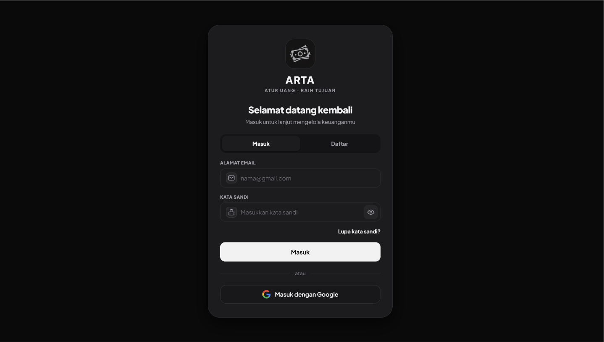

Live
ARTA — Atur Uang
Personal finance app
Aplikasi keuangan personal untuk mencatat pemasukan dan pengeluaran, memantau saldo, dan melihat ringkasan keuangan harian. Proyek utama yang sedang aktif saya kembangkan.
Tech: HTML / CSS / JavaScript
View demo